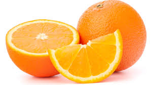

tentangbuah.com
Jeruk

jeruk (bahasa Inggris: orange) adalah buah dari spesies citrus dalam famili Rutaceae. Istilah "jeruk" umumnya mengacu pada Citrus × sinensis[1] yang juga disebut jeruk manis dan Citrus aurantium yang disebut jeruk pahit.